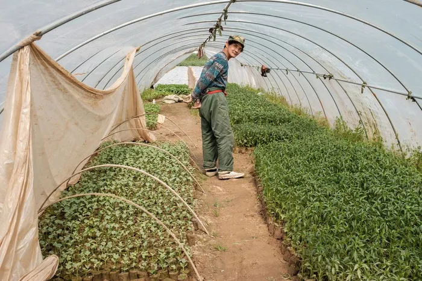
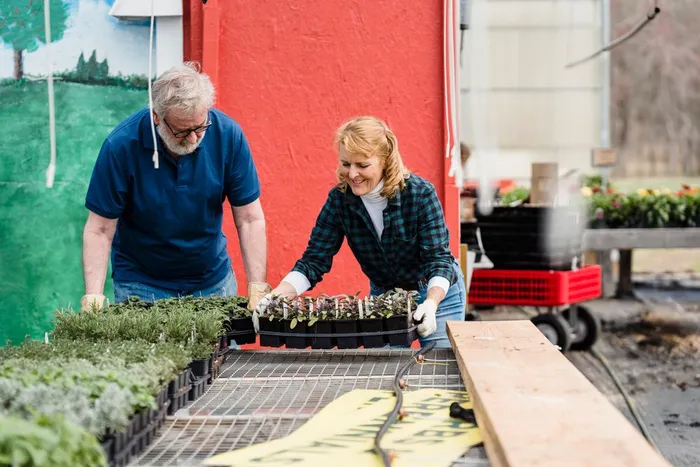
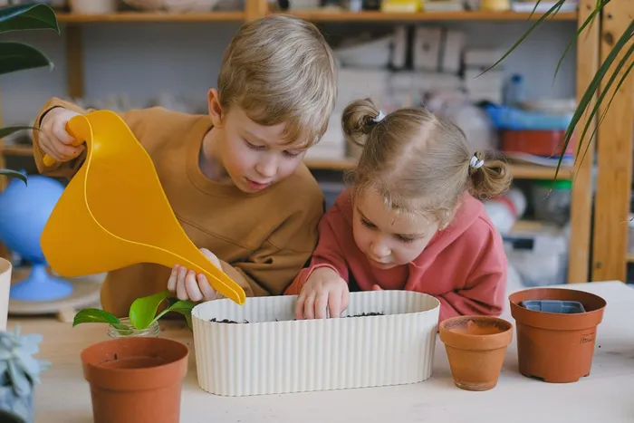
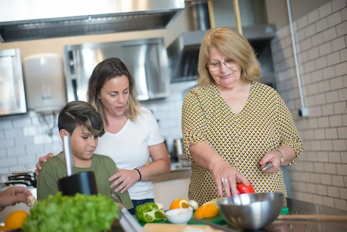

- Home
- What we do
Four programmes. One farm.
Everything we run is free or pay-what-you-can, and everything starts with a seed.
The farming year
What runs when
Pick a month to see which programmes are open. Most pause in the depths of winter, when the beds rest.
- Green Jobs TrainingMon to Thu, 8 weeks
Runs March to November.
- Grow TogetherTuesdays and Saturdays
Runs March to October.
- Little SproutsSaturday mornings
Runs April to October.
- Seed to PlateThursday evenings
Runs March to December.

Green Jobs Training
An 8-week course in growing and horticulture
Find out more →
Grow Together
Community growing for everyone
Find out more →
Little Sprouts
A garden club for ages 4 to 11
Find out more →
Seed to Plate
Cooking skills with food you grew
Find out more →